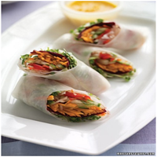

Spring Rolls with Carrot-Ginger Dipping Sauce

Ingredients
6 rice-paper wrappers
2 cups radish sprouts ( 1/2 ounce)
1 red beet, trimmed and thinly sliced crosswise
1 medium carrot, peeled and julienned
1 cucumber, julienned
1 red bell pepper, stem and seeds removed, julienned
3/4 cup coarsely grated daikon
3 medium carrots, peeled and coarsely chopped
1 small shallot, quartered
2 tablespoons coarsely grated peeled fresh ginger
1/4 cup rice-wine vinegar (not seasoned)
2 tablespoons low-sodium soy sauce
1/4 teaspoon toasted sesame oil
Pinch each of coarse salt and freshly ground pepper
1/4 cup vegetable oil
1/4 cup water
Directions
1. Make the spring rolls: Soak one rice-paper wrapper in a large bowl of hot water until pliable.
Transfer to a work surface. Place one-sixth of the sprouts, beet slices, carrot, cucumber, bell pepper, and daikon on the wrapper, towards the bottom.
Fold ends in and roll tightly to enclose filling. Repeat with remaining ingredients to make 5 more rolls.
2. Make the dipping sauce: Puree carrots, shallot, ginger, vinegar, soy sauce, sesame oil, salt, and pepper in a food processor until smooth.
With machine running, add vegetable oil and then water through the feed tube in a slow, steady stream.
Serve sauce with spring rolls.